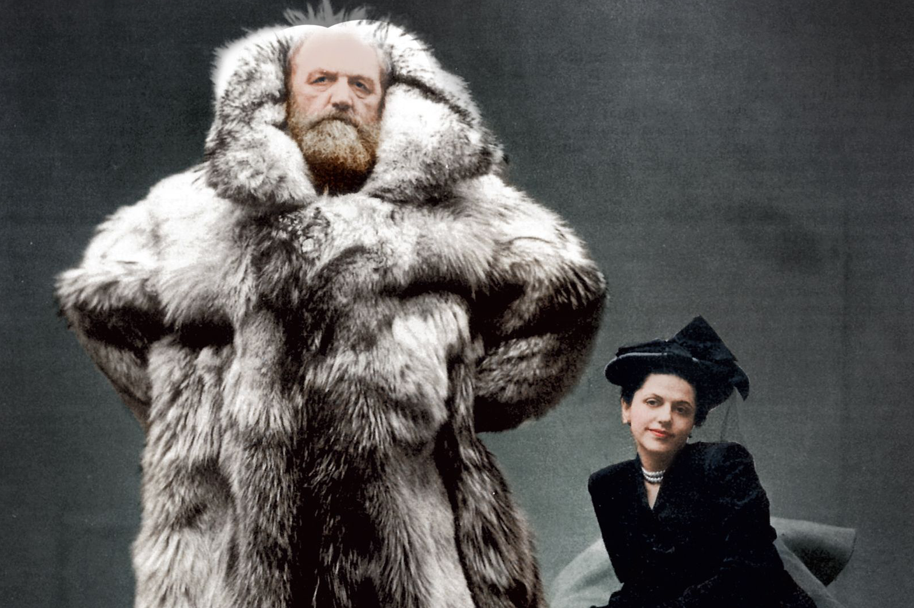

6'7" Peter Freuchen with 3rd wife, Dagmar Cohn
(photo: Irving Penn 1947)
Lorenz Peter Elfred Freuchen
Birth
- 1886 - Nykøbing Falster, Denmark
Marriages
- 1911-1921 - Navarana Mequpaluk | Thule, Greenland (until her death, from the Spanish Flu)
- 1924-1944 - Magdalene Vang Lauridsen | Enehøje, Denmark (divorced)
- 1945-1957 - Dagmar Cohn | New York, USA (until his death)
Children
- 1916-1962 - Mequsaq Avataq Igimaqssusuktoranguapaluk | Thule, Greenland (son)
- 1918-1999 - Pipaluk Jette Tukuminguaq Kasaluk Palika Hager | Thule, Greenland (daughter)
Books
- 1932 - The Sea Tyrant
- 1935 - Arctic Adventure: My Life in the Frozen North
- 1935 - Ivalu, the Eskimo Wife
- 1938 - It's All Adventure...
- 1946 - White Man
- 1952 - The Law of Larion
- 1953 - Vagrant Viking: My Life and Adventures
- 1954 - Ice Floes and Flaming Water: A True Adventure in Melville Bay
- 1956 - The Legend of Daniel Williams
- 1957 - Peter Freuchen's Book of the Seven Seas
- 1958 - I sailed with Rasmussen: Freuchen's own story of the Great Explorer
- 1958 - Whaling Boy
- 1958 - The Arctic Year
- 1961 - Book of the Eskimos
- 1962 - Men of the Frozen North
- 1965 - The Peter Freuchen Reader
Film / TV
- 19? -
Death
- 1957 - Anchorage, Alaska, USA (aged 71, died of a heart attack)
- Peter's ashes were scattered on the table-shaped Mount Dundas just outside of Thule, Greenland.